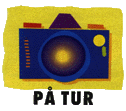

GUIDEDE UTFLUKTER:
BÅTTUR Tilbring en herlig dag på havet med sol, sommer og bading! Også landsbybesøk. Heldagstur inkl. lunsj ca. 155 kr.
I SVAMPFISKERNES FOTSPOR Vi besøker en av de 3 svampfabrikkene som er igjen på øya, og spiser deretter middag på en taverna. Kveldstur inkl. middag ca. 110 kr.
EMBORIOS - VERDENS ENDE På denne båtturen kan vi beundre solnedgangen mens båten er på vei til "verdens ende" - landsbyen Emborios. Her spiser vi middag på en hyggelig taverna. Kveldstur inkl. middag ca. 125 kr.
PATMOS Med hydrofoil kommer man til den hellige øya Patmos som har en spesiell atmosfære du straks vil merke når du kommer til øya. Her kan du bl.a besøke klosteret og Apokalypse-grotten der apostelen Johannes skrev Johannes Evangeliet og Johannes Åpenbaringen. Det er også gode badestrender her. Ca 180 kr.
KALYMNOS er en liten øy som ligger mellom Kos og Leros. Øya har en vakker natur med stupbratte klipper, daler og idylliske badeviker. Med Tjæreborg bor du i landsbyen Panormos, ca. 5 km fra øyas hovedstad Pothiá, eller i Massouri-området på øyas nordside. Innbyggertall på Kalymnos: Ca. 17.000. FLYPLASS: Ingen flyplass på Kalymnos. Du lander på Kos flyplass og transporteres med båt til Pothiá på Kalymnos som tar ca 1 time og der-etter 20 minutter med buss. MAT OG DRIKKE: Kalymnos kan by på noe av det beste innen gresk kjøkken. Noen steder velger du maten på ekte gresk vis ved at du går inn på kjøkkenet og selv peker på det du vil ha. FORNØYELSER: 3 diskoteker, mange barer og de fleste caféene ligger i Massouri. Mange restauranter og tavernaer. STRAND OG BADEMULIGHETER: Flott sandstrand både i Panormos og Massouri-området. Forøvrig er det flere fine strender også steinstrender på hele øya. Krystallklart rent vann. INNKJØPSTIPS Gull, sølv, natursvamper, honning, tørkede krydderurter m.m. Godt utvalg av butikker i hovedstaden Pothiá. ÅPNINGSTIDER De fleste butikker stenger midt på dagen, men i turistområdene er det oftest åpent hver dag hele dagen. Banker: Mandag - fredag kl. 8.00 - 14.00. TRANSPORT: Bussforbindelse mellom Massouri-Panormos-Pothiá og til utkantbyene på øya. Hyppige båtfor-bindelser til øya Telendos. Taxi fra Panormos til Pothiá koster ca.kr. 30. Obs. I høysesongen kan det være problemer med vanntilførselen til enkelte tider av døgnet. Det kan også være en del mygg. |
![[SN Horisont]](http://www.sn.no/img/horisont.gif)